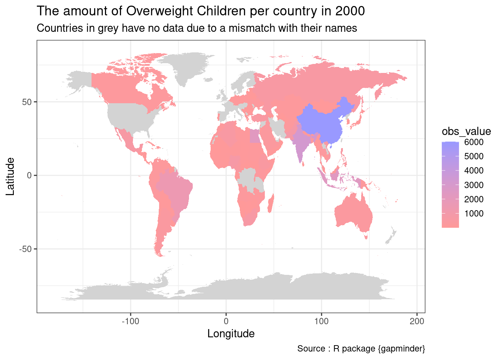
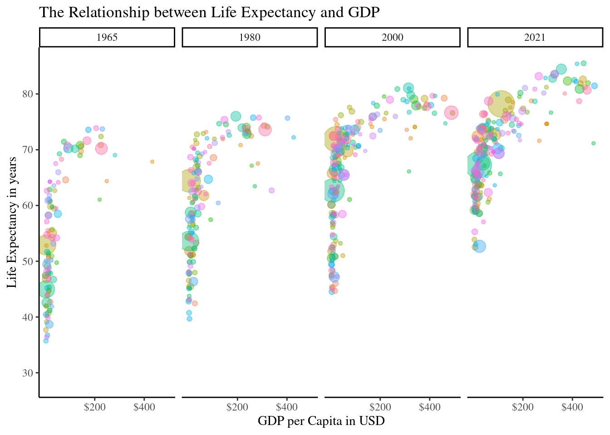
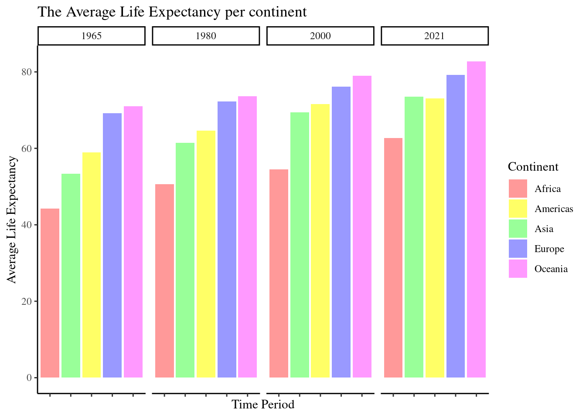

A Global Perspective:
Navigating the Weight of Tommorow, Today
Introduction
Critical Global Health Issue regarding Overweight Children
The amount of children under the age of 5 who are statistically overweight is becoming a critical global health issue impacting the well-being of children worldwide.The prevalence of overweight children in this age group has been steadily increasing, posing significant challenges to their physical health and future development. As we embark on this journey of ‘Navigating the Weight of Tommorow, Today’, we must delve into the depths of UNICEF data to unravel the story of our youngest generation grappling with the weight of today’s lifestyle choices.
This interactive dashboard offers a comprehensive examination of childhood overweight rates across different regions of the world, drawing on data from UNICEF. Through a series of visualizations and insights, we aim to:
- Illuminate the prevalence of overweight children
- Identify geographical variances
- Underscore the urgency of addressing this growing concern
It is important to engage with the data to gain deeper insights into the factors contributing to childhood overweight in order to foster healthier environments and lifestyles for our youngest population.
Map Visualisations
Differences between countries regarding the amount of overweight children in both 2000 and 2022.
The two world maps help depict the number of overweight children (under 5) for every 1000 people per country in 2000 and 2022 by providing a visual representation of the changes in the childhood overweight category over two decades. In order to show comparison overtime the data in put in map format for both 2000 and 2022, viewers can quickly compare and contrast the prevalence of childhood obesity in different countries across the two time periods. This visual comparison enables easy identification of trends and changes over time. With the help of colour-coding to represent data, where darker shades indicate higher numbers or percentages. In this case, viewers can easily see which countries had higher levels of childhood overweightness in each year and how those levels have changed over time. For instance, if a country’s shade becomes lighter from 2000 to 2022, it suggests a decrease in childhood overweightness, whereas a darker shade indicates an increase.
Time Series Visualisation
Population Dynamics overtime since 1952 across different continets and regions.
The x-axis represents the years under consideration, while the y-axis depicts the total population size. Each line on the graph represents a distinct country, however they are further filtered by colour-coding by their continent to facilitate easy identification. By plotting population data over multiple years, the graph enables viewers to observe changes and trends in population size within each country and particularly grouped by continent over time.
This temporal analysis provides insights into
- population growth;
- demographic shifts;
- other long-term patterns i.e., historical events.
Scatterplot Visualisation
Evolution of the Relationship between Life Expectancy and GDP per capita in intervals from 1965 to 2021 per continent.

This scatterplot visualizes the relationship between life expectancy and GDP overtime. The x-axis represents GDP per capita, a measure of economic prosperity, while the y-axis depicts life expectancy at birth, an indicator of overall health and well-being. Each data point on the plot represents a country, and the size of the dots corresponds to the population size of that country. The scatterplot looks at the years 1965, 1980, 2000 and 2021. This feature enables viewers to observe how the relationship between life expectancy and GDP has evolved over different time periods, providing insights into trends and patterns. The graph has also colour-coded each country to its specific continent, this provides us with an insight into regional statistics. From the graph we can see Africa has remained the continent with the lowest life expectancy and GDP levels. This graph shows that as GDP rises the quality of life and length of life increases. This is central to the topic on childhood overweightness as with a higher quality of physical well-being from the outset of a childs life can in fact reflect the trajectory of their life. It is important we look to graphs like this to gain a deeper understanding on the issue.
Barchart Visualisation
Evolution of the Average Life Expectancy per continent from 1965 to 2021 per continent.

A bar chart depicting life expectancy rates per continent across different decades provides a comprehensive view of global health trends and disparities. Childhood obesity rates are closely linked to overall population health and can also be reflected in trends related to life expectancy.By visually comparing the data, viewers can discern several insights: High childhood obesity rates may signal poor health outcomes in adulthood, potentially impacting life expectancy. Therefore, a region with high childhood obesity rates may also experience challenges in improving life expectancy over time. The bar chart is an easy to read visualization with it spanning over several decades indicated by their respective continents through colour-coding.
Socioeconomic Factors : Childhood obesity rates often correlate with socioeconomic factors such as :
- income inequality;
- access to healthy food options;
- opportunities for physical activity.
Conclusion
Critical Global Health Issue regarding Overweight Children
In conclusion, the visualization of overweight children under the age of 5 through various graphs offers a compelling glimpse into the severity of the issue and its geographical distribution. By employing diverse graphical representations such as line graphs, choropleth maps, and scatterplots, we were able to provide a nuanced understanding of the prevalence of childhood overweight across different regions and over time.
The data presented shed light on the disparities in childhood overweight rates between countries and continents, emphasizing the need for targeted interventions and policy initiatives to address this public health challenge. Additionally, the interactive features of the visualizations allowed for dynamic exploration of the data, enabling stakeholders to identify trends, patterns, and potential areas for intervention.
Moving forward, it is imperative to continue monitoring and addressing the factors contributing to childhood overweight, including :
- socioeconomic status;
- access to healthy food options;
- opportunities for physical activity;
- education etc.,
Through ongoing research, collaboration, and evidence-based interventions, we can work towards ensuring a healthier future for our youngest generation in ‘Navigating the Weight of Tommorow, Today’.